Describe it in English.
Get the command.
ai turns plain English into shell commands. Review the result, press Enter, and it lands in your history — ready to re-run with ↑.
Install
Three commands to your first answer
No package manager. No runtime. No build step. One file in your $PATH.
Drop the script in
Pull the single file straight from the repo and make it executable.
mkdir -p ~/bin && curl -L \
https://raw.githubusercontent.com/Omodaka9375/ai-in-a-shell/main/ai \
-o ~/bin/ai && chmod 755 ~/bin/aiAdd the alias
Sourced, not executed — that is what lets the script inject into your shell history.
# shell config
alias ai='. ~/bin/ai'Add a key, ask away
--setup writes a commented template to ~/.ai and opens it in $EDITOR. Uncomment one key, save, done.
ai --setup
ai which process is running on port 8000What you get
Small script, no surprises
Everything is one readable shell file. Read it, patch it, keep it.
Multi-provider
OpenAI, Anthropic, Gemini, any OpenAI-compatible endpoint, or a fully local model.
Context-aware
Sends your cwd, git branch, and modified files, so answers fit the repo you are standing in.
History injection
A confirmed command goes straight into your shell history. Press ↑ and it is live.
--run
Skip the confirmation step and execute the result immediately.
--silent
Raw command only, no commentary. Compose it inside your own pipelines.
$EDITOR review
Multi-line results open in your editor. Save to accept, discard to cancel.
In action
Ask, review, run
Nothing executes until you say so. That is the whole safety model.
Usage
Four options, that is all
| Option | What it does |
|---|---|
--run | Execute the command immediately, no confirmation. |
--silent | Print the raw command only, for piping. Does not execute. |
--setup | Create or edit the ~/.ai config file. |
-h | Show help. |
Three modes
# Standard — confirm before it reaches history
ai rename all .txt files to .md
# Auto-run — execute without confirmation
ai --run list all docker containers
# Silent — compose with other commands
echo "My IP is: $(ai --silent get my public ip address)"Configuration
One file, plain exports
Everything lives in ~/.ai, or export the same names in your shell.
AI_PROVIDER="anthropic" # openai | anthropic | gemini | local
AI_MODEL="claude-haiku-4-5" # override the default model
AI_SHELL="zsh" # override detected shell
AI_OS="macOS" # override detected OS
AI_CONTEXT=1 # cwd & git context (default: 1)
AI_EDITOR_MODE=1 # multi-line results in $EDITOR (default: 1)
AI_TIMEOUT=30 # curl timeout in secondsProviders
# Ollama, LM Studio, llama.cpp server
AI_PROVIDER="local"
AI_LOCAL_API_URL="http://localhost:11434/v1/chat/completions"
AI_MODEL="llama3.2" # mandatoryContext awareness. With AI_CONTEXT=1 (default) the prompt carries your current working directory, the git branch name, and up to 10 modified plus 10 staged files.
Editor. For VS Code set EDITOR="code --wait" so the script waits for you to close the file.
Examples
Just prefix with ai
Click any card to copy the query.
Review before you run. Always read an AI-generated command before you execute it. You are fully responsible for anything you run. This software comes with absolutely no warranty, to the extent permitted by applicable law.